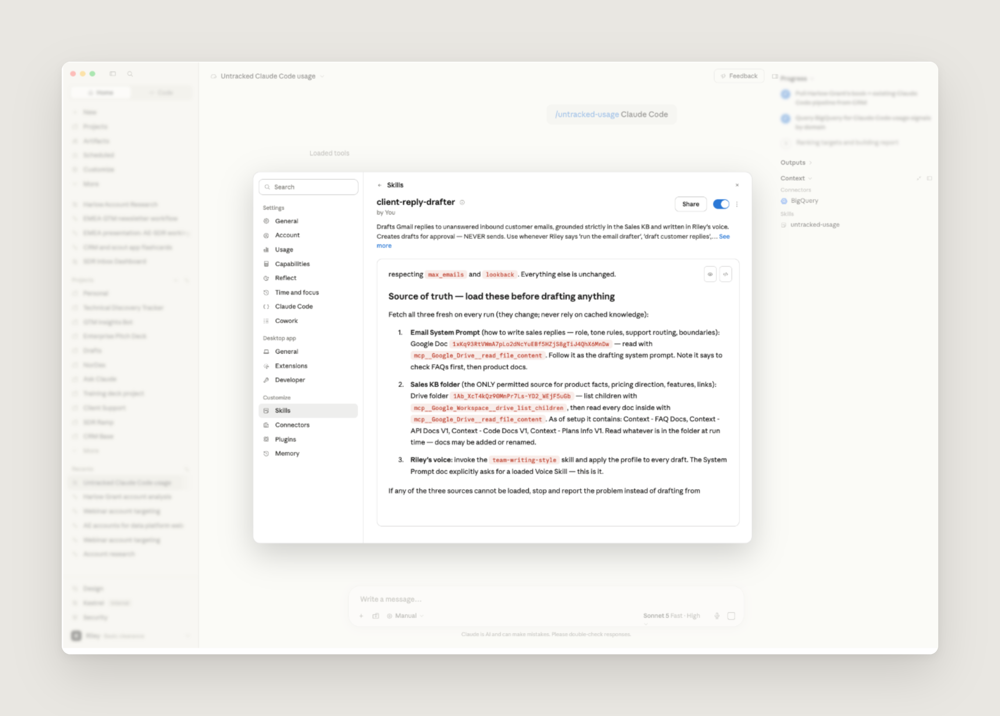
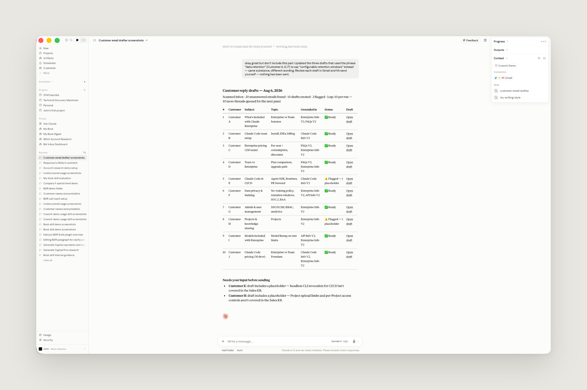
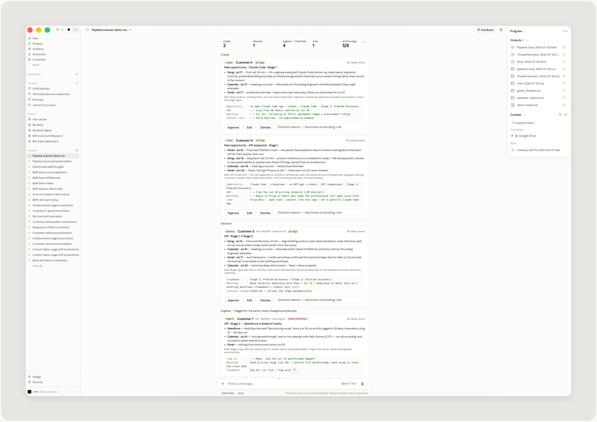
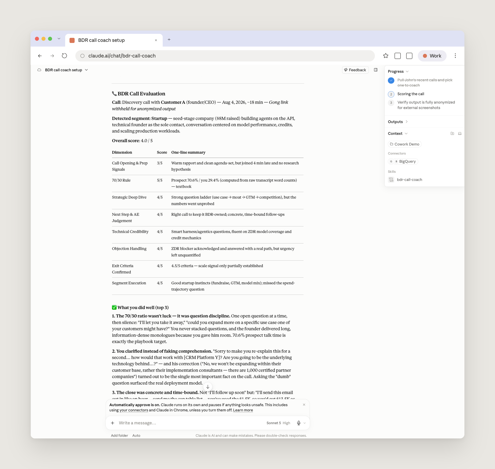
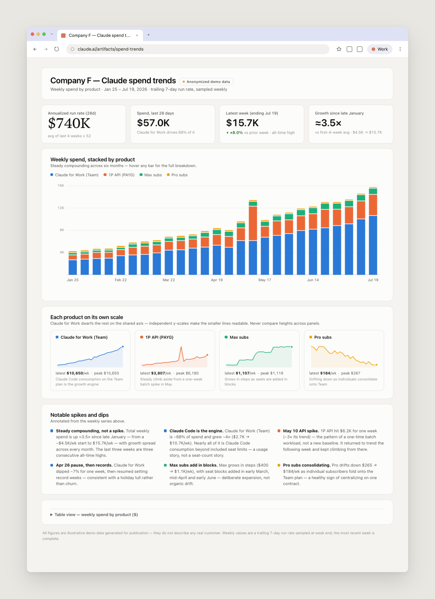
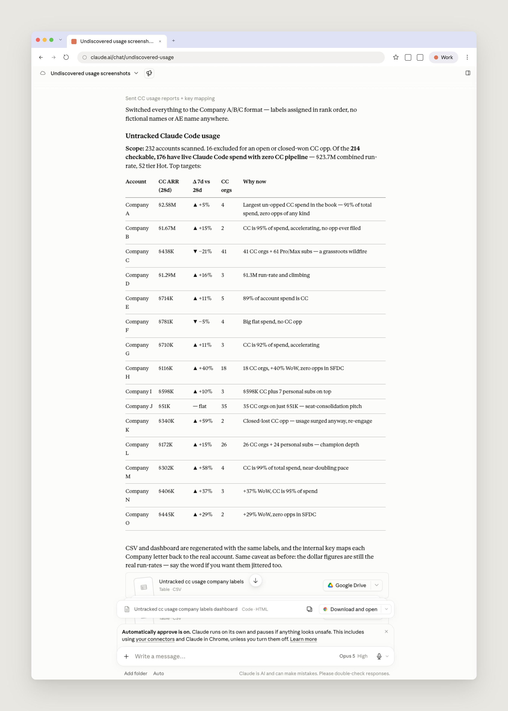
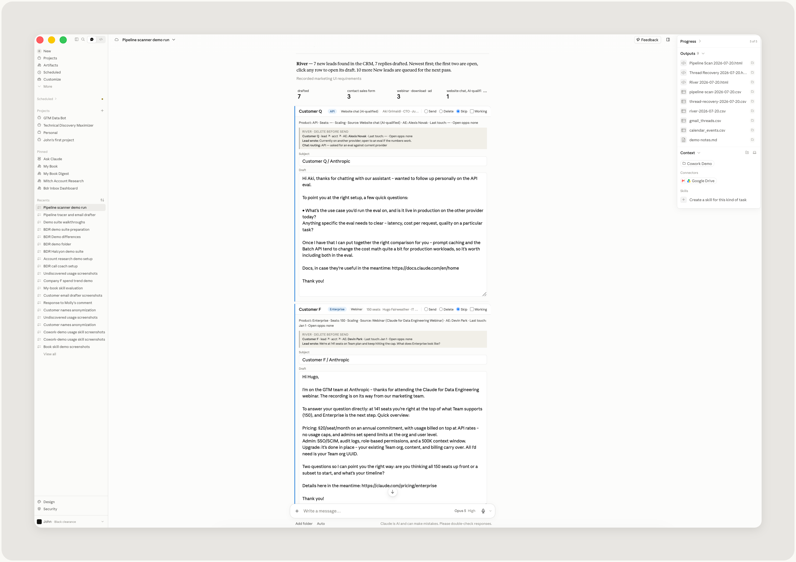

Anthropic의 비즈니스 개발 담당(BDR) John Albert가, 자기 팀이 Claude로 담당 계정을 조사하고, 고객 회신을 초안으로 써 두고, 예전에는 데이터팀 뒤에 줄 서서 기다려야 했던 일회성 요청까지 처리하는 방식을 이야기한다.
비즈니스 개발 커리어 초창기에는, 어카운트 이그제큐티브(AE)들이 수백 개의 계정이 담긴 리스트를 건네주면 나는 회사 하나하나를 조사하고, 적합한 담당자를 찾고, 이메일 주소를 뒤져내고, 아웃리치 문안을 써야 했다. 인바운드 쪽도 마찬가지로 수작업이 많고 시간을 많이 잡아먹는 워크플로우였다.
작년 여름 Anthropic에 합류하면서 나는 세일즈 인박스 관리 업무를 맡게 됐다. 내 담당 계정(book of business)을 관리하는 일에 더해, 잠재 고객에게서 들어오는 인바운드 문의에 수작업으로 답하느라 하루에 5시간 남짓을 썼다. 그것도 우리 제품에 대해 같거나 비슷한 질문에 반복해서 답하는 일이 많았다.
그 일의 상당 부분이 이제 Claude Cowork의 스킬(skill)과 예약 작업(scheduled task)으로 세팅되어 있다. 고객 개인 맞춤 이메일은 초안 상태로 준비되고, 나는 보내기 전에 검토하고 다듬기만 하면 된다. 내 아웃바운드 업무는 상세한 리서치에서 시작되는데, 그 리서치를 취합하는 데 몇 시간을 쓸 필요가 없어졌다.
그 결과 나와 동료들은 수작업 반복 업무에 시간을 덜 쓰고, 정작 중요한 일 — 고객을 돕는 일 — 에 더 많은 시간을 쓴다.
Claude Cowork가 Anthropic의 비즈니스 개발 기능을 어떻게 한 단계 끌어올리고 있는지, 그래서 우리가 어떻게 전략적인 업무와 고객 문제를 이해하는 일, 그리고 Claude가 그 문제를 어떻게 풀 수 있는지 고객에게 알리는 일에 더 많은 시간을 쏟게 됐는지 소개한다.
BDR은 세일즈 프로세스의 맨 앞단에 앉아, 인바운드 수요를 검증(qualify)하고 비즈니스를 위한 아웃바운드 파이프라인을 만든다. Anthropic에서는 이제 그 두 동선이 모두 Claude Cowork를 먼저 거쳐 간다.
우리 인바운드 세팅의 토대가 되는 것은, 세일즈 인박스로 가장 자주 들어오는 질문들과 그에 대한 우리의 최선의 답변을 내가 모아 둔 문서다. 이 문서가 우리의 세일즈 지식 베이스(knowledge base) 역할을 하고, Claude는 우리가 보내는 답장을 초안 잡기 전에 항상 이 문서를 읽는다. 이 문서를 만드는 것도 Claude가 도왔고(나는 그냥 관련 정보 출처를 가리켜 주기만 했다), 지금은 Claude가 오래돼서 맞지 않을 수 있는 정보를 표시(flag)해 주며 문서가 최신 상태인지 계속 검증한다. 사용자는 그 표시를 확인해 검증하면 된다.
그 문서 위에 올라간 가장 무거운 워크플로우는 매시간 실행되는 인박스 스킬(inbox skill)이다. 담당자의 인박스를 스캔해서 답장이 필요한 스레드를 모두 찾아내고, 담당자가 읽고 수정해서 보낼 수 있도록 답장 초안을 써 둔다. 이 스킬은 얇은 시스템 프롬프트, 컨텍스트로 들어가는 지식 베이스, 그리고 담당자의 글쓰기 스타일 프로필로 구성된다(이 프로필도 각자 보이스 스킬(voice skill)을 써서 만드는데, 그 스킬이 우리가 써 온 문서·메시지·이메일을 훑어 읽는다).


나는 행정 업무 부담을 덜어 주는 더 가벼운 스킬 두 개에도 기대고 있다. 모든 BDR은 미팅 노쇼와 잠재 고객이 갑자기 연락이 끊기는(going dark) 고통을 안다. 이걸 해결하려고 나는 Gmail과 Google 캘린더를 지켜보다가 그런 일이 생기면 알려 주는 스킬을 만들었다. 덕분에 빠르게 후속 조치를 할 수 있다.
다른 스킬은 우리 CRM 커넥터를 사용해 새로 들어온 리드를 전부 스캔하고, 개인화된 첫 접촉 문안을 초안으로 작성한다. 하루 동안 정해진 일정에 따라 실행되어, 리드를 기다리게 두지 않도록 한다.
Salesforce를 최신 상태로 유지해 주는 스킬도 있다. 이 스킬은 기회 단계(opportunity stage)에 대한 우리 내부 가이드를 읽고, 그것을 Gmail과 Gong에서 실제로 벌어지고 있는 일과 대조한다. 고객과 미팅을 했고 가격 관련 질문 단계로 넘어갔다면, 그 기회는 아마 한 단계 진전되어야 할 것이다. Claude는 Salesforce 업데이트를 제안할 때마다 그 근거를 함께 제시하고 승인을 기다린다. 내가 제안을 수정하거나 거절하면, 그 이유를 기록해 두고 같은 실수를 반복하지 않는다.

나는 평균적으로 어느 시점이든 100개가 넘는 계정을 담당한다. 이 계정들을 전부 커버할 수 있는 건 밤사이 예약 작업으로 돌아가는 스킬 덕분이다. 이 스킬은 내 담당 계정 전체를 훑으며 프로스펙팅을 하고, 각 계정의 현재 상태를 관찰한다. 예를 들어 우리가 누구와 연락하고 있는지, 그들이 오늘 Claude를 어떻게 쓰고 있는지, 어떤 신호가 유의미한지 같은 것들이다. 이를 위해 Claude는 Salesforce, Apollo·Common Room 같은 세일즈 도구, Gong, 그리고 우리 데이터 웨어하우스에 연결해 심층 리서치를 수행하고, 그 결과를 우리 팀이 정리해 둔 아웃바운드 가이드와 ICP(이상적 고객 프로필) 기준에 비추어 검증한다.
스킬의 이런 구성 요소들이 컨텍스트를 더해 주어, Claude가 좀 더 Anthropic의 BDR처럼 일하도록 만든다. 아침에 Claude Cowork를 열면 계정별로 브리프, 점수, 그리고 아웃바운드 플레이가 준비되어 있다.
이 워크플로우는 시간이 갈수록 더 유용해진다. BDR 각자가 Claude의 결과물에 피드백을 줄 수 있고, 그 피드백이 다시 스킬에 반영되기 때문이다. 스킬은 작은 메모리 파일과 원장(ledger)을 유지해서, 반복적이거나 중복되는 작업이 생기지 않게 한다.
우리는 이 리서치를 후속 대화에 활용한다. 그래서 아웃리치가 맞춤화되고, 고객과 이야기할 때 그들의 비즈니스를 이해한 상태이며 그들의 문제에 충분히 가까이 있어 더 깊은 전략적 논의를 할 수 있다.
디스커버리 콜(discovery call)도 우리가 Claude로 개선하려고 하는 아웃바운드 동선의 또 다른 부분이다. 우리는 Gong 통화록을 우리 디스커버리 콜 플레이북에 비추어 평가하고 통화마다 스코어카드를 만들어 주는 스킬을 쓴다. 대화 내용에 기반한 구체적인 피드백이 함께 나온다. 피드백에는 잘한 점 상위 3가지, 개선할 영역 상위 3가지, 우리 기준에 대한 명시적인 합격/불합격 점수, 그리고 다음에 연습할 가장 레버리지가 큰 한 가지가 담긴다.

BDR 팀에는 애드혹(ad-hoc)한 방식으로 요청이 들어오는 경우가 많은데, Claude 덕분에 우리는 AE들과 더 전략적인 방식으로 협업할 수 있게 됐다. AE가 주요 계정의 사용량 추이를 궁금해하면, 관련 트렌드를 부각한 읽기 쉽고 설명적인 대시보드를 프롬프트 한 번이면 제공할 수 있다.

데이터 분석과 리포팅을 Claude와 함께 하는 것은 아웃바운드 업무에서도 힘을 발휘한다. 내가 가장 좋아하는 워크플로우 중 하나는 '미발견 사용량(undiscovered usage)' 프롬프트를 돌리는 것이다. 이 프롬프트는 한 AE의 담당 계정 전체를 살펴, 아직 세일즈 기회(opportunity)가 없는데도 계정 단위에서 사용 신호가 잡히는 곳을 찾아낸다. 이건 우리가 고객에게 연락을 시작해서 함께 그들의 Claude 사용과 경험을 최적화해 나가기에 아주 좋은 신호인 경우가 많다.

이벤트 아웃리치에도 Claude를 쓴다. 최근에 우리 AE 중 한 명이 곧 열릴 Claude Code for Data Engineering 웨비나를 언급하면서, 자기 담당 계정 중 참석에 관심 있을 만한 곳을 찾아 줄 수 있느냐고 물었다. 그런 용도의 스킬은 없었지만, 이런 유형의 요청에는 프롬프트 하나로 충분했다. Claude는 담당 계정 전체에 걸쳐 사용 데이터와 CRM 이력을 확인하고, 각 계정을 우리 ICP에 비추어 점수를 매긴 뒤, 초대할 만한 담당자와 함께 가장 적합한 곳들을 표시해 주었다.

이 스킬들과 예약 작업, 그리고 우리가 정리해 둔 컨텍스트가 합쳐지면서 Claude는 언제나 켜져 있는(always-on) 비즈니스 개발 파트너가 된다.
아래는 Claude Cowork를 시작하는 비즈니스 개발 팀을 위한 몇 가지 팁이다.
내 최고의 조언? 일단 실험을 시작하라. 컨텍스트와 도구를 더 많이 줄수록 더 많은 것을 해낼 수 있다.
John이 이 스킬들을 시연하는 모습은 Claude Cowork for Business Development Representatives 웨비나에서 볼 수 있다.
지금 Claude Cowork를 시작해 보라.
이 글의 모든 UI 목업은 합성 데이터로 표현된 것이며, 실제 기업이나 개인을 나타내지 않는다.